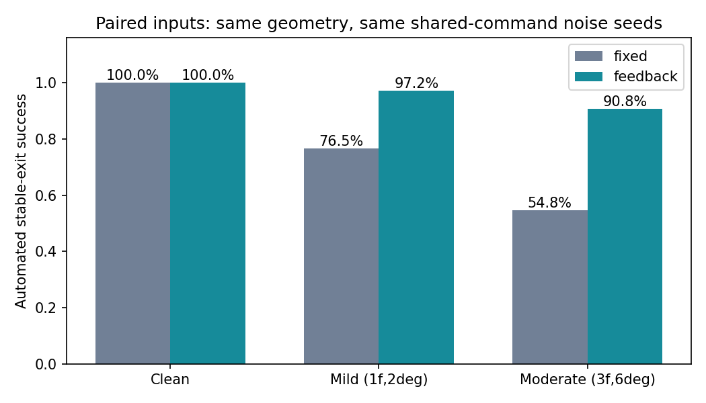
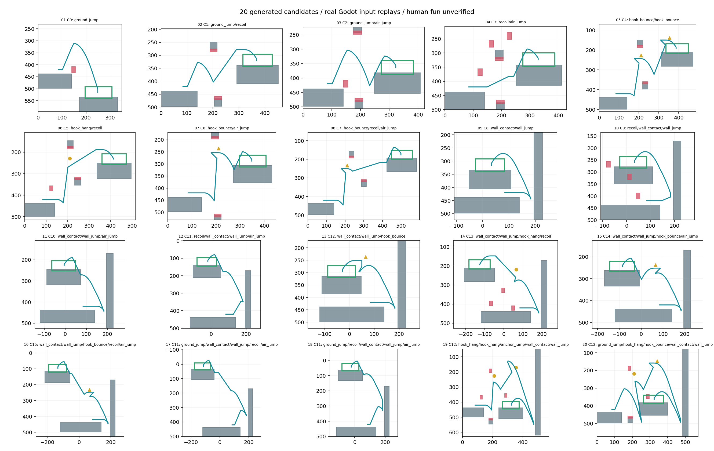

2026-10-23，独立研究分支 feature/composable-action-search。游戏物理仍固定在 12f6cb006d7119598e3235f4ca4f7323e4c9d092、官方 Godot 4.7.2、60 Hz；没有修改生产 Motor、Controller、Router、Traversal 或资源参数。本轮检查 source_provenance.json 中所有原文件，字节漂移为零。
本轮证明：基础 Cell 可以通过能力合同、动作推导、真实运动、反例细化自动生成跨能力候选；比上一轮固定动作骨架有实质进步。尚未证明长期趣味性、全能力空间生成完备性或 Runtime 在线预算。
prototype/composable/contracts.py、capabilities.json：能力显式声明，动作有前置状态、资源消耗和恢复效果。未知能力、重复能力、缺依赖明确拒绝。钩索/蹬墙恢复额外空跳与钩索资格，不补弹；反冲离地后不凭空保留两次空跳。种子在不同 Python hash seed 下可重现。
synthesis.py：从规则推导有限动作树，为动作实例创建独立地形、钩点、攀爬墙、落台和危险包络。没有完整预制 Module。墙跳后的反向输入等待真实 wall_kick，避免提前转向导致脱墙；离钩、弹点、落台也使用真实状态与输入。末段只通过 Router 水平输入反馈收敛，不写角色位置、速度或资源。
search.py：先真实执行动作，再沿实际下降轨迹布置接收平台，重放完整几何；状态词、完整身体危险扫掠和至少六帧落地静止都通过才能入档。档案按能力集合与实际动作词保留候选。本轮不是完整 MAP-Elites 实现：描述子已从实际轨迹提取，但档案质量当前主要按落台宽度选择，尚未用人类趣味反馈训练质量函数。
evaluate.py：在固定几何搜索走/跳/二段跳/反冲/单钩/墙跳及删动作替代。只有使用能力真子集，或同能力但关键动作更少的成功策略，才成为机械成本反例；其他成功路线保留。对可分离反例，在原轨迹完整身体安全管之外添加少量研究危险 Cell，然后重新真实验证原路径和替代路径。不能分离或仍有捷径的候选继续标为研究候选。
这仍有设计先验：基础动作算子、墙/钩点相对位置、接收面与危险 Cell 的参数化构造。自动创造的是这些规则许可的动作关系和空间实例，不是无先验发明新物理机制。危险包络也未接正式荆棘宿主/伤害消费者。
三次种子分别为 920100、920101、920102，每组最多 12 个推导词、每词 3 个参数变体，统一测试 112/160 宽度接收面。结果完整保留，包括失败。
| 输出目录 | 动作提案 | 几何候选 | 稳定可通关 | 实际动作词 | 总墙钟 |
|---|---|---|---|---|---|
results/composable-search-v5 |
378 | 666 | 548 | 101 | 26.16 s |
results/composable-search-seed2 |
378 | 671 | 548 | 100 | 25.76 s |
results/composable-search-final |
378 | 663 | 572 | 101 | 25.82 s |
| 合计 | 1,134 | 2,000 | 1,668 | 173 个跨种子不同词 | 77.74 s |
三次均覆盖固定移动+跳跃基底、反冲/二段跳/钩索/贴墙四个可选能力的全部 16 种组合。第三次改用状态握手控制；三次是同预算运行，不能把总量当成同一算法版本的统计重复。可通关几何率合计 83.4%，不含动作提案阶段被拒绝的候选；也不是真人成功率。两种落台宽度、同一动作词的多个几何高度相关。
actual_word 区分起跳、额外空跳、挂点到达、弹点到达、离钩跳、墙跳和反冲。钩索的原始 hook_contact 是探测命中信号，不能当作拉拽完成；本轮使用真实进入 hook_hang / hook_contact_kick 状态计数。173 个词不等于 173 种有趣体验，几何哈希不用于宣称玩法新颖性。
单组两批 Godot 子进程约 26–27 CPU 秒、累计子进程峰值约 798 MiB RSS。评估最高约 1,019 MiB。文件中的 children_peak_rss_kib 是进程累计子进程高水位，并非每个 Module 内存。批处理摊销时间不代表手机、浏览器或单个 Runtime 生成时延。
第三次档案按预先固定规则选 20 个：先每能力组合最短实际词，再补较长不同词。反例细化只用干净轨迹与校准搜索；最终 seed=331051 的扰动不用于选几何或改策略。此前调试噪声实验目录原样保留。
| 同几何、成对扰动 | 状态/落点反馈策略 | 固定见证时序与方向 |
|---|---|---|
| 干净输入 | 20/20 | 20/20 |
| 每命令 ±1 帧、瞄准 ±2° | 389/400，97.25% | 306/400，76.50% |
| 每命令 ±3 帧、瞄准 ±6° | 363/400，90.75% | 219/400，54.75% |

两策略共享原命令噪声键、种子与误差；固定策略额外展开的收尾轴输入不再另加时机噪声。固定策略保留相同的收尾启动扰动。反馈控制能读取真实状态、位置与瞄准目标，因而不是模拟人类；这些是命令时机/瞄准扰动，不包含感知延迟、错误决策或真实手柄误差。每模块每噪声强度只有 20 次，异质模块不能用一个汇总比例保证逐模块稳定。
双钩候选 C4 轻度仅 9/20、中度 12/20，明确标为容错待优化；小样本非单调结果保留。其他 19 个轻度均 20/20。精确分组、失败、轨迹、命令误差在 results/composable-evaluation-final，不隐藏弱项。
共 450 次替代策略测试。最初 9/20 个模块发现更少能力/动作的通关反例，8 个可添加分离 Cell，8/8 保留原真实见证。修改后仍有 3/20 个模块存在已证实的更简单替代，试玩下拉及能力行均标明；其余 17 个只是本次有限搜索未发现反例，不能证明能力必要性。
三个未解决候选：C12 墙跳→弹点可直接墙跳；双挂点→离钩跳→墙跳可普通起跳过；起跳→挂点→弹点→墙跳可单钩离开。成功替代测试策略总数不是不同体验/独立路线数。当前替代规划较弱，删动作仍保留后续状态门可能超时；后续需加入可重新规划的连续状态搜索。发现合法分支不应一律堵死，奖励、风险和操作体验仍需设计/真人评价。
move+wall_climb 且关闭普通跳生成 6/6 可通关几何；jump+double_jump 且关闭移动，首次失败保留，调整垂直动作时机/落台选择后生成 6/6。它们是小样本，不代表另外 20 个合法集合全部能生成高质量挑战。
prototype/godot/modules_v2.json 是 20 个预生成候选，含准确能力快照、几何、真实逐帧输入与审查提示。真实输入展开后独立回放 20/20 稳定成功；不调用生成时反馈，不搬角色。delivery/composable-v2/modules.mp4 是六个代表模块的原生 Godot 60fps 录像，录像/headless 分段结果一致。本地 Chromium 实际鼠标/键盘验证移动、跳跃、能力关闭、射击、重试及 20/20 回放，页面/引擎错误为零；初次自动化定位失败保留。浏览器载入候选，支持原键鼠手动试玩和真实见证回放；没有浏览器在线优化器。
delivery/composable-v2/mapnotes 提供 20 份当前编辑器 v1 评审草图，保留精确坐标平移、动作轨迹和研究收据。validateDocument() 用编辑器固定版本实际检查通过 20/20。能力要求标为 unspecified，避免把见证能力写成未经证明的最低条件；难度分数留空。没有实现编辑器回写游戏或自动恢复有效收据。
下一步编辑器接入应提供独立的能力集合输入、预算、失败/覆盖率、实际动作词、扰动曲线、可复现反例和一键真实试玩。编辑任何几何、能力、物理版本后使收据失效并重验；由用户标趣味性/公平性/疲劳度，而非自动填分。
当前全部搜索和反例修正在 Python+桌面 Godot 离线运行；Runtime 只运行既有真实角色、装配候选 Cell 与按合法能力选择候选。尚未集成游戏正式生成器或 Map Notes 服务。
后续离线应学习可行参数域、更新动作树与行为档案，使用真实扰动与人工评分选择规则；Runtime 才执行有预算的轻量语法/参数采样、保守快速筛选和真实局部复核，失败回退到已验证候选。缓存动作/能力/物理版本的可行域，不要求维护庞大的手工 Module 库，但需要少量可信回退及设计先验。
优先修双钩容错和三项退化，再扩展更强的替代动作搜索与碰撞宿主。人类试玩需记录不同技巧水平的成功、操作需求、可读性、重复感和重玩意愿。稳定出口模块之间的连续速度、资源、机关相位合同尚未验证，不直接推广至 Macro/Map。
依赖/提取方式见 README，第一轮论文/实现研究见 REPORT。
python3 -m unittest discover -s prototype/composable -p test_contracts.py -v
python3 prototype/composable/search.py --seed 920102 --words 12 --variants 3 --name your-new-search
python3 prototype/composable/search.py --capabilities move wall_climb --seed 920111 --name your-wall-search
python3 prototype/composable/evaluate.py --source your-new-search --name your-new-evaluation --modules 20 --trials 20 --seed 331051
Godot_v4.7.2-stable_linux.x86_64 --path prototype/godot res://main_v2.tscn
输出路径必须新建，已有物理输出拒绝覆盖。正式实验与后加无移动分支的来源差异、固定策略公平性、钩索真实到达、来源文件快照见 独立审查 与 evidence/composable-audit。早期 search/matrix 执行收据未逐文件记源码 hash；最终评估、交付及追加实验增加该记录，不能把全历史都称为同粒度冻结。
八项合同测试、合法/非法矩阵、真实输入验证和独立代码/数据审查已完成。趣味性、手感、公平性、视觉和真机认可仍待用户试玩；自动测试不代签。